TOOLS WORTH TRYING
Everything you need to cook with confidence.
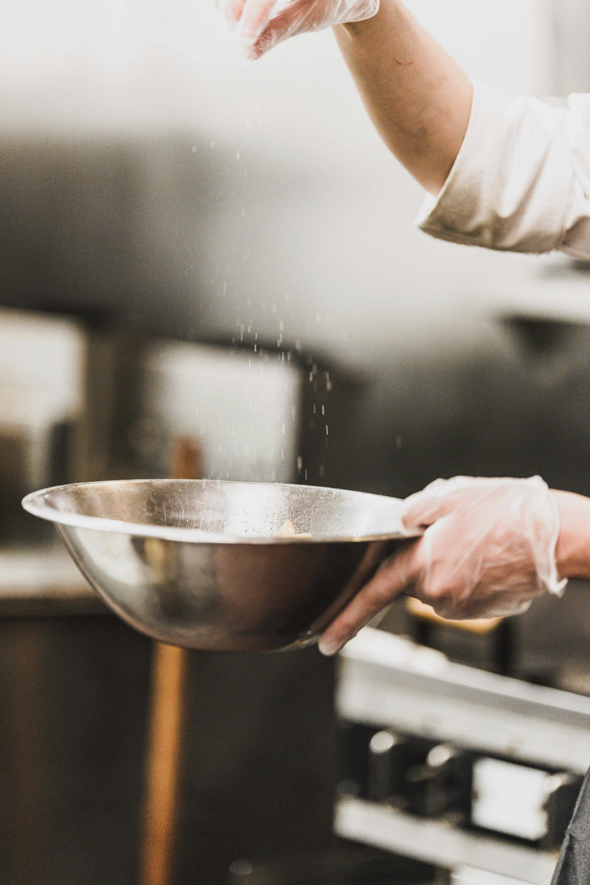
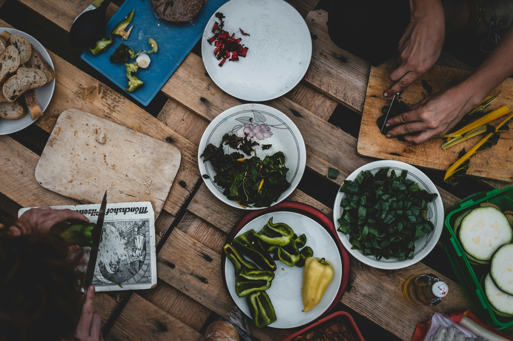
Everything you need to cook with confidence.


TOOL OF THE WEEK
A nice sharp knife makes prep faster, safer and more enjoyable. It’s the most important tool in any kitchen.
Marie | Home Cook
Read the story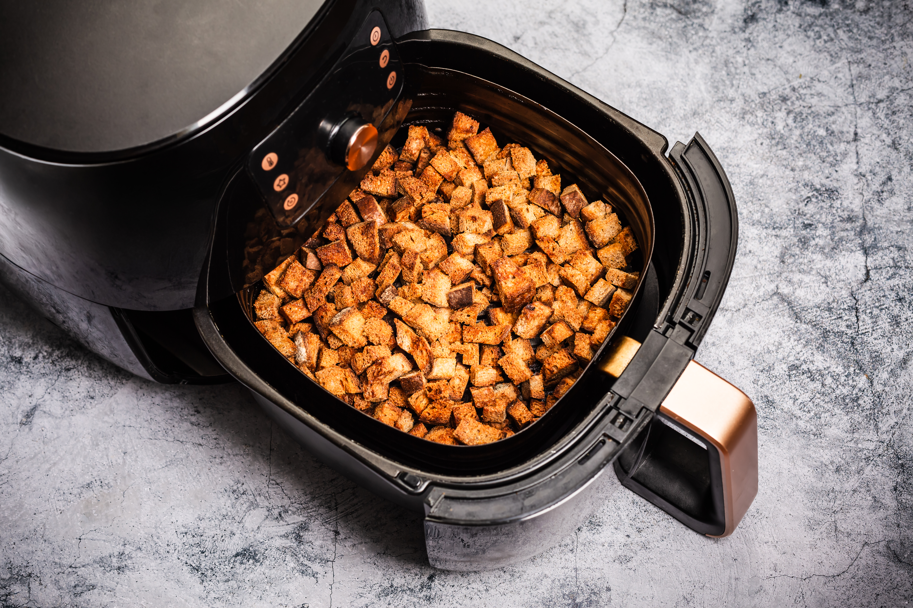
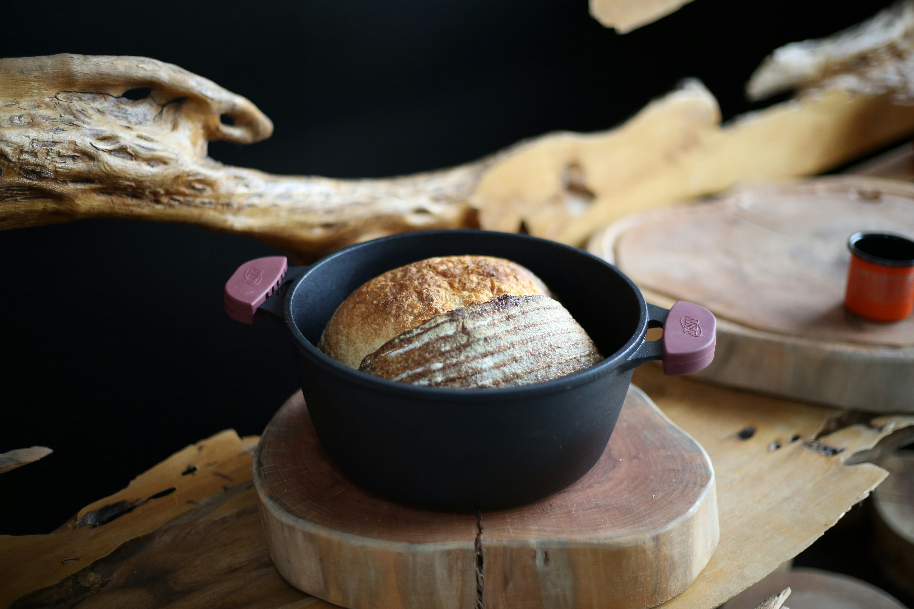
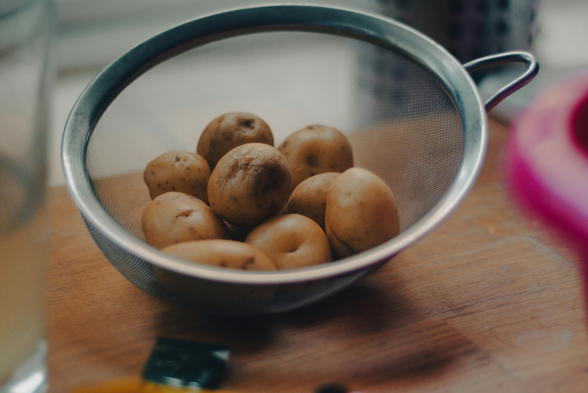

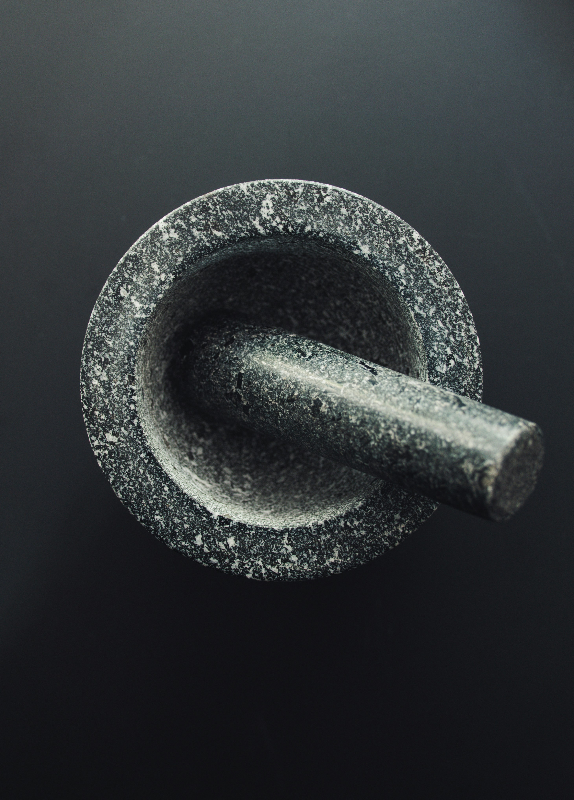
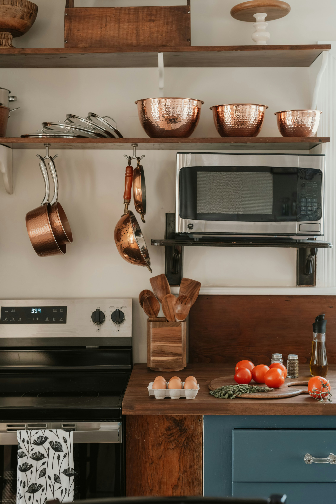
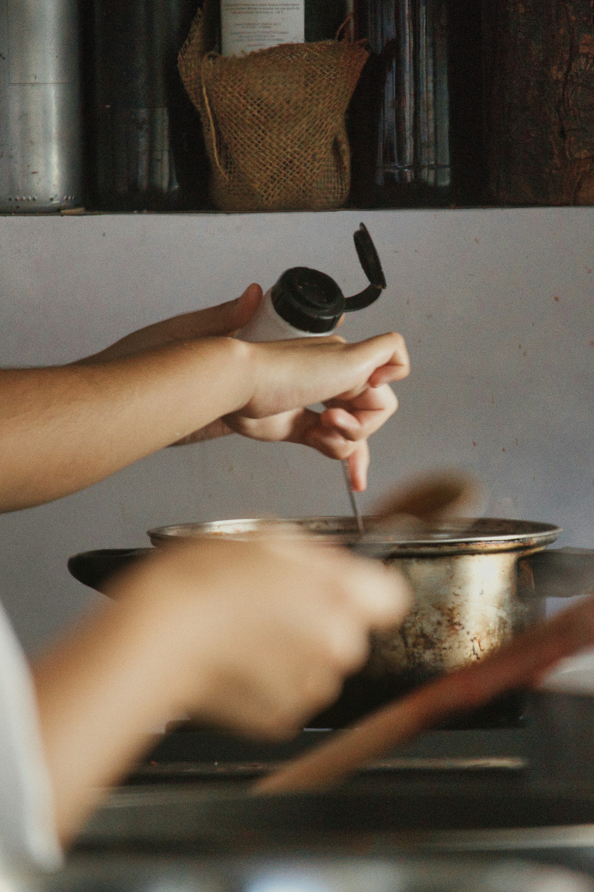

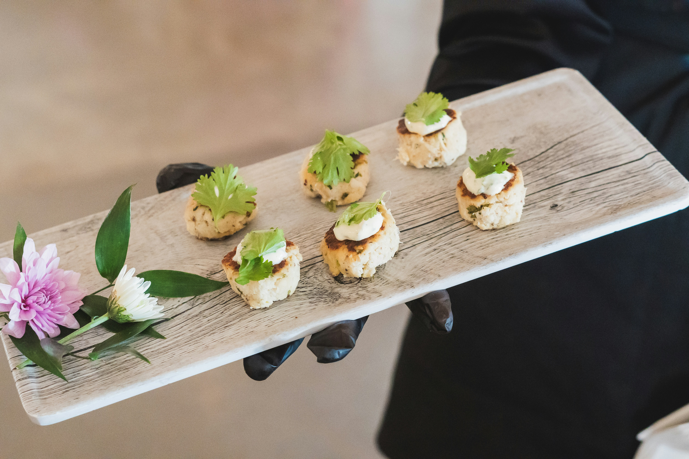
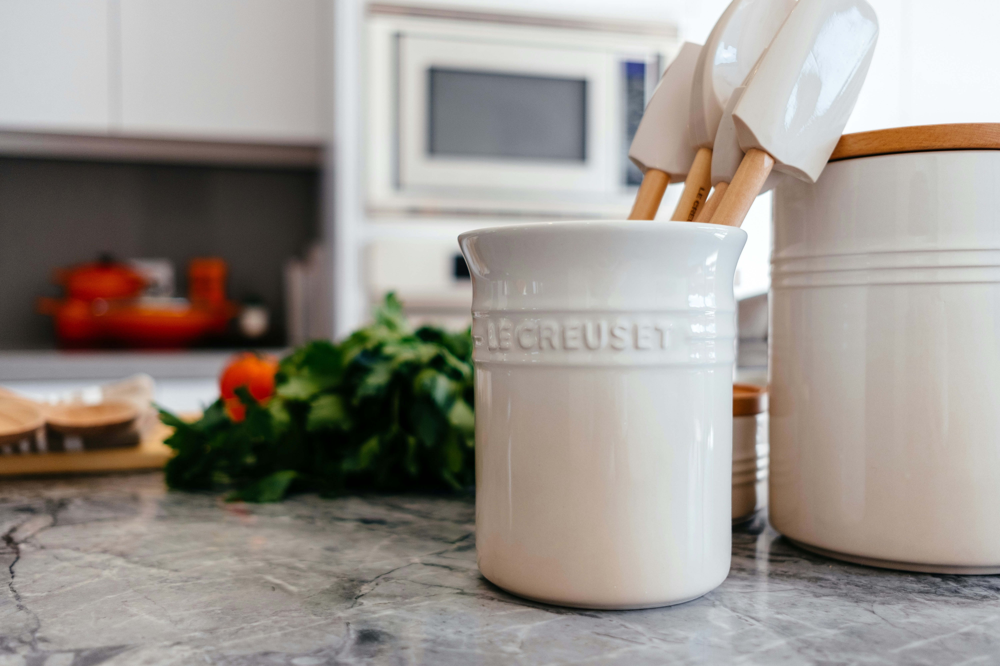
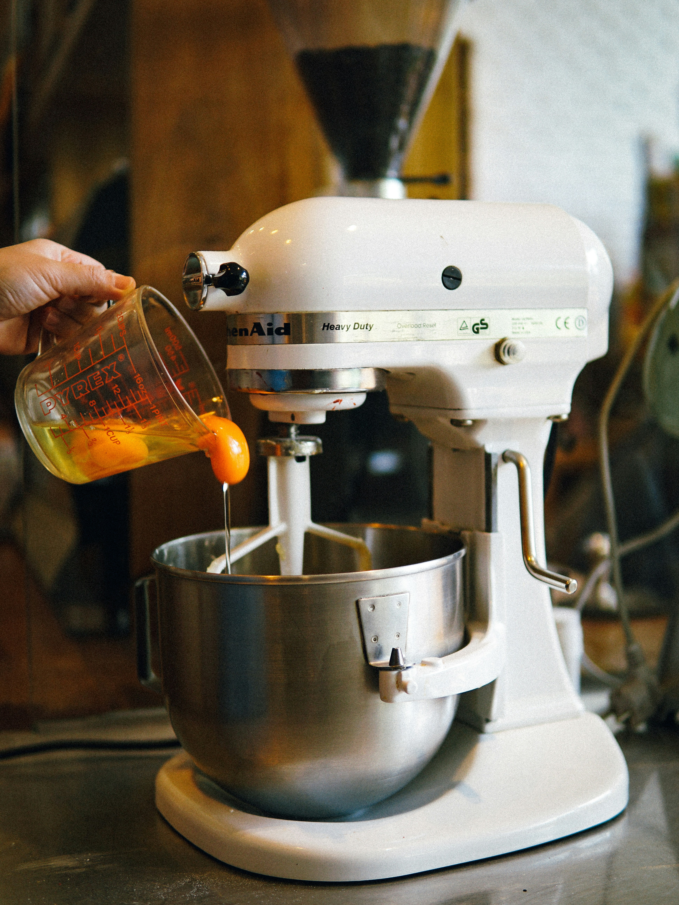
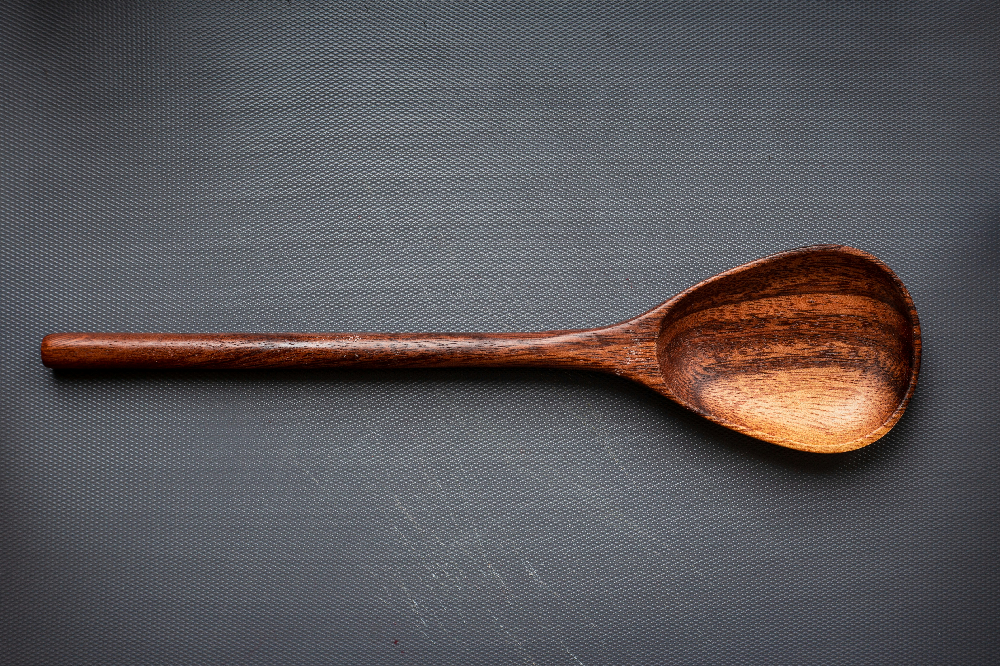